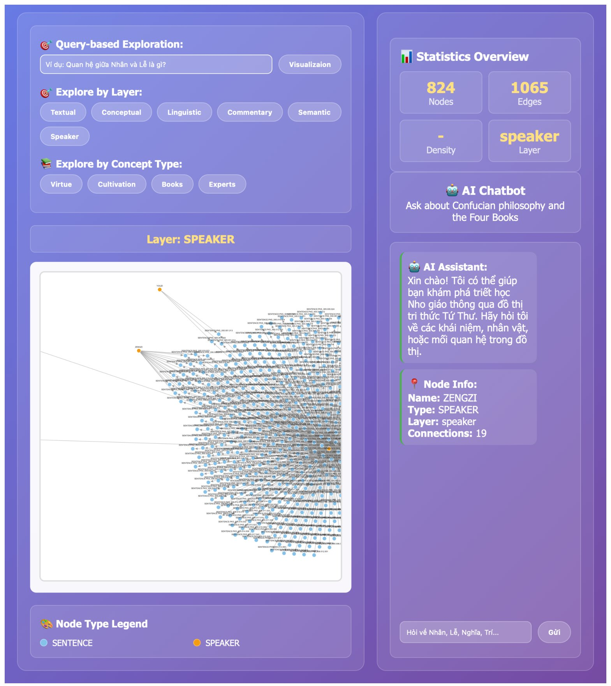
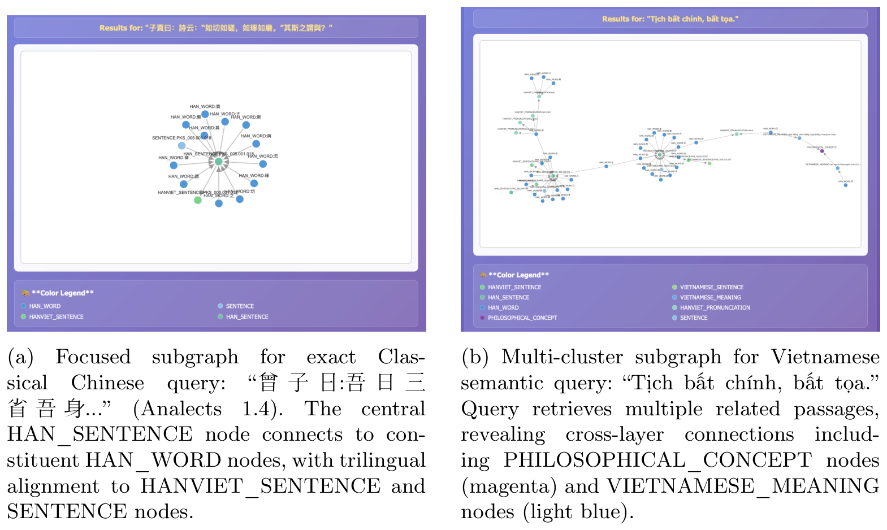
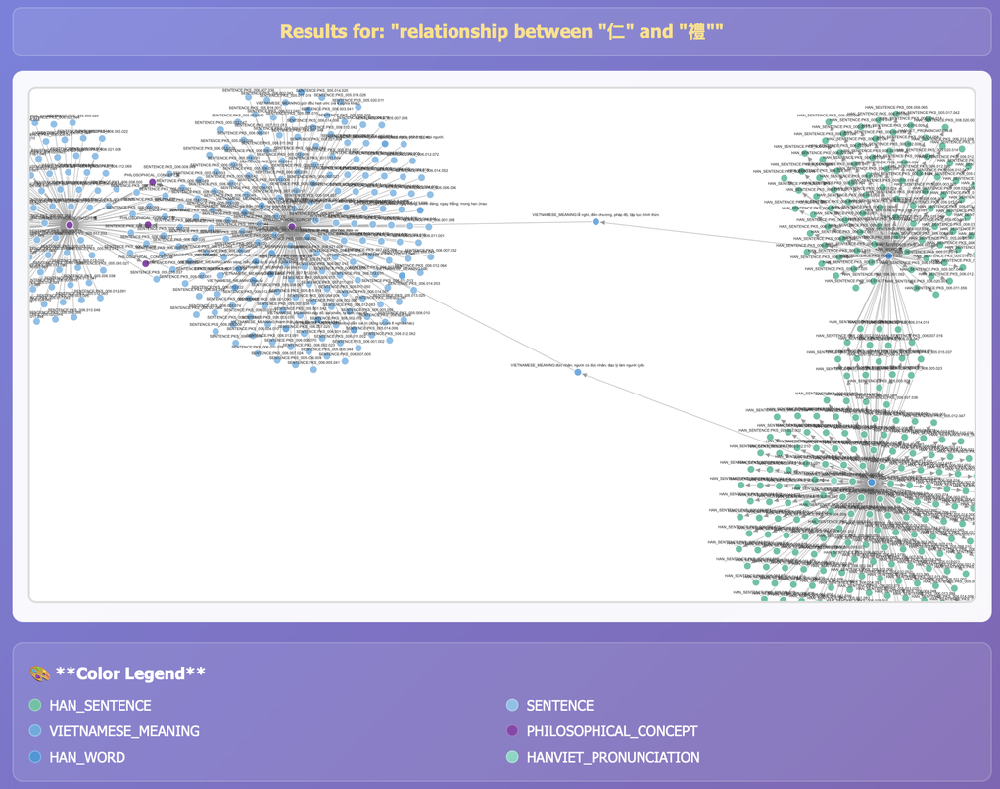

The Four Books have shaped East Asian intellectual traditions, yet their multi-layered interpretive complexity limits their accessibility in the digital age. While traditional bilingual commentaries provide a vital pedagogical bridge, computational frameworks are needed to preserve and explore this wisdom. This paper bridges AI and classical philosophy by introducing Graphilosophy, an ontology-guided, multi-layered knowledge graph framework for modeling and interpreting The Four Books. Integrating natural language processing, multilingual semantic embeddings, and humanistic analysis, the framework transforms a bilingual Chinese-Vietnamese corpus into an interpretively grounded resource.
Graphilosophy encodes linguistic, conceptual, and interpretive relationships across interconnected layers, enabling cross-lingual retrieval and AI-assisted reasoning while explicitly preserving scholarly nuance and interpretive plurality. The system also enables non-expert users to trace the evolution of ethical concepts across borders and languages, ensuring that ancient wisdom remains a living resource for modern moral discourse rather than a static relic of the past. Through an interactive interface, users can trace the evolution of ethical concepts across languages, ensuring ancient wisdom remains relevant for modern discourse. A preliminary user study suggests the system's capacity to enhance conceptual understanding and cross-cultural learning.
By linking algorithmic representation with ethical inquiry, this research exemplifies how AI can serve as a methodological bridge, accommodating the ambiguity of cultural heritage rather than reducing it to static data. The Source code and data are released at https://github.com/ThuDoMinh1102/confucian-texts-knowledge-graph.
The knowledge graph is constructed as six distinct yet interlinked layers: Textual, Linguistic, Conceptual, Commentary, Speaker, and Semantic. Each layer is processed independently and then interconnected through ontology-guided relationships.
The ontology comprises 20 entity classes and 18 directed relationship types. An interactive web interface powered by Google Gemini supports natural language querying over the layered graph.

| Metric | BM25 | Semantic (E5) | Hybrid | Best Performer |
|---|---|---|---|---|
| P@1 | 0.773 | 1.000 | 1.000 | Hybrid/Semantic |
| P@3 | 0.652 | 1.000 | 1.000 | Hybrid/Semantic |
| P@5 | 0.564 | 1.000 | 1.000 | Hybrid/Semantic |
| P@10 | 0.505 | 1.000 | 0.995 | Semantic |
| MRR | 0.773 | 1.000 | 1.000 | Hybrid/Semantic |
| NDCG@5 | 0.770 | 1.000 | 1.000 | Hybrid/Semantic |
| NDCG@10 | 0.766 | 1.000 | 1.000 | Semantic |
Semantic retrieval scores 1.000 on every metric, while BM25 ranges from 0.505 to 0.773. The hybrid approach matches semantic retrieval except on P@10, where it scores 0.995. The paper notes that the evaluation used a synthetic test corpus, so the perfect precision scores may not reflect real-world retrieval performance.
Focused subgraphs show only the immediate neighborhood of query-matched nodes. An exact single-sentence query produces a star-shaped subgraph, while a semantic query over Vietnamese text retrieves multiple thematically related passages.

A complex concept query on the relationship between two Confucian concepts yields two large clusters connected by Linguistic and Semantic nodes.

@misc{dographilosophy,
author = {Do, Minh-Thu and Le-Tran, Quynh-Chau and Nguyen-Mai, Duc-Duy and Nguyen, Thien-Trang and Le, Khanh-Duy and Tran, Minh-Triet and Nguyen, Tam V. and Le, Trung-Nghia},
title = {Graphilosophy: Graph-Based Digital Humanities Computing with The Four Books},
}